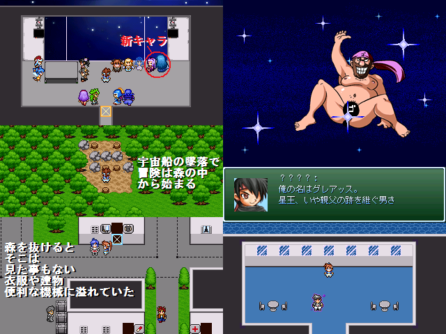

 |
|
| 作者：F-man | |
| ツクール：2000 | |
| 作者コメント： 前作「ちょこれーと☆くえすと」で宇宙に旅立った冒険者たちは、 ゴメス博士の故郷である惑星ツクスに向かう。 一方で惑星の間では星王ツクス・ホオ＝モセことツクス６９世が老衰で亡くなり、 息子のグレアッスと娘のエドゥリァは自分が星王になろうと 国を分けて争いを始めようとしていた・・・ 正統派スペースオペラＲＰＧここに登場！ ・・・といきたい所ですが、 本編中に惑星間の移動とかはないですスミマセン＞＜ システムは前作からかなりの追加と変更と調整をしてるので、 冷遇だったハーナスとダークネスⅢをこれでもかというぐらいに待遇を上げました。 用語が多めなのでレドミを見ながらのプレー必須です RPGをマゾく遊ぶのが好きな方は連れてく仲間を１人だけにするか リナックス一人旅プレーもやって、どうぞ（作者は途中で投げましたが理論上クリアは可能なはず） |
|
| 管理人コメント： スペースオペラ！ わくわくする響き… |
|
| ダウンロード(1.86MB) / 感想掲示板 | |
| 前の作品 / 次の作品 / TOPへ戻る | |